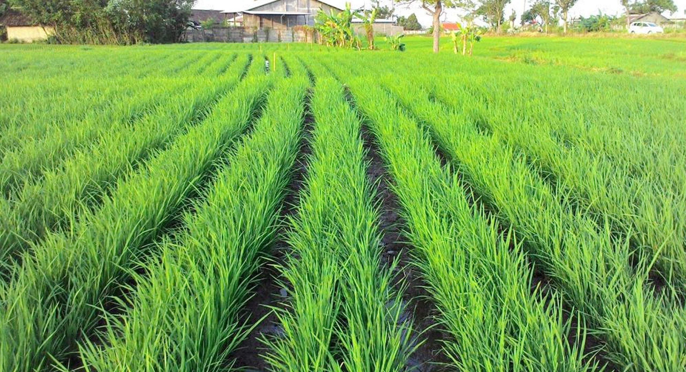
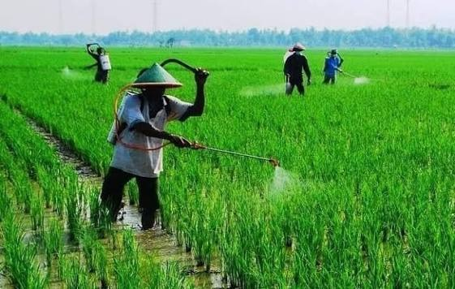
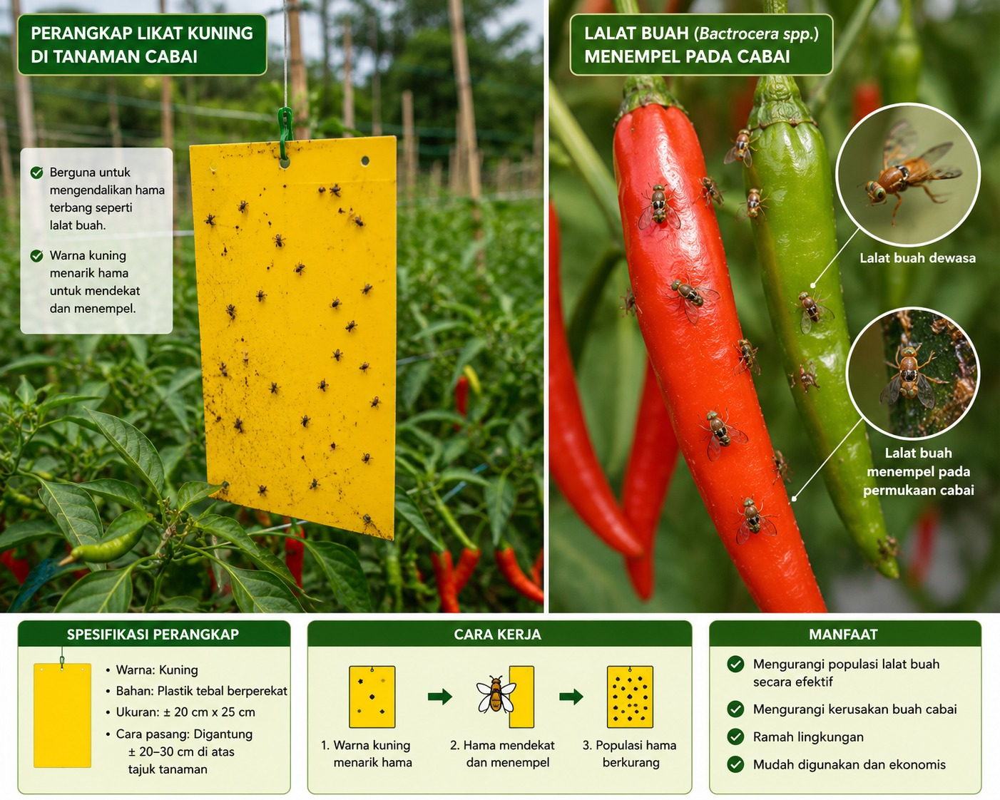
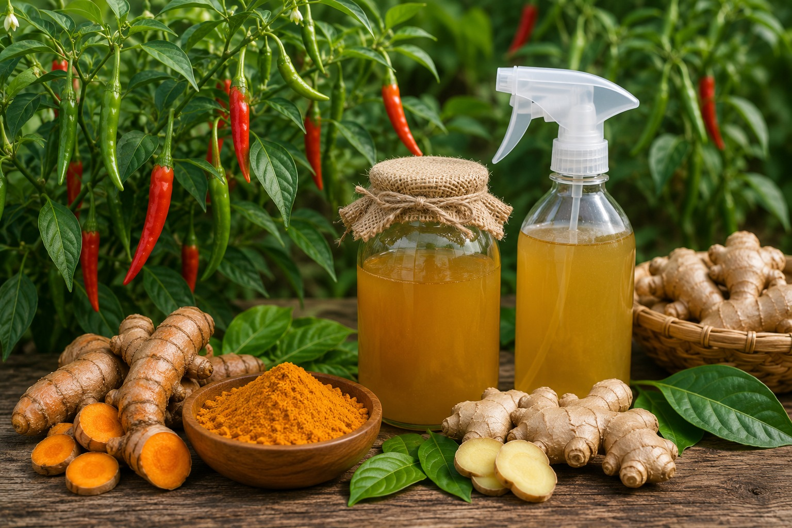

Kumpulan penelitian terbaru mengenai budidaya padi dan cabai berbasis teknologi pertanian modern.

PADIPenelitian mengenai produktivitas, efisiensi lahan, serta peningkatan hasil produksi menggunakan sistem tanam jajar legowo.

PADIMembahas pengaruh kombinasi pupuk organik cair dan urea terhadap pertumbuhan serta hasil panen padi.

CABAIPenelitian pengendalian hama lalat buah menggunakan perangkap warna pada tanaman cabai.

CABAIMembahas penggunaan bahan alami sebagai alternatif pengendalian hama tanaman cabai.